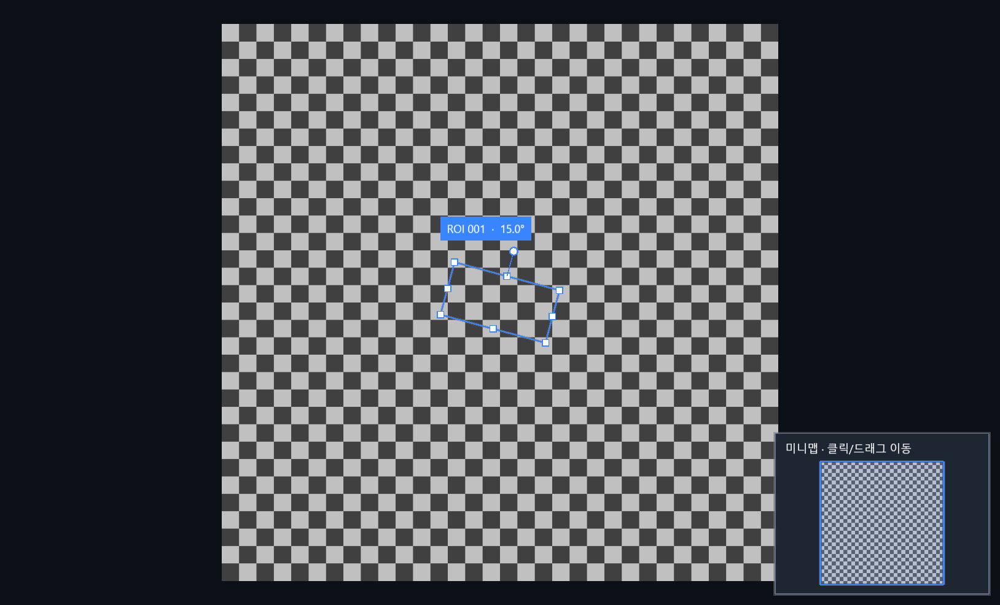

09. 작은 캔버스를 직접 구축하기
실행되는 예제에서 시작해 책임별로 한 단계씩
먼저 이 장면 하나만 생각하세요
한꺼번에 만들지 말고, 확인되는 순서로 연결합시다
목표는 8K 체크무늬를 보여 주고 ROI를 끌 수 있는 작은 창입니다. 처음부터 전부 연결하면 검은 화면의 원인이 좌표인지 입력인지 표시인지 알기 어렵습니다. 화면 없이 확인할 수 있는 것부터 통과시킵니다.
기억할 한 문장계산 → 입력 → 창 연결 순서로, 각 단계의 결과를 확인하고 다음으로 갑니다.
- Foundations · 계산 확인
좌표·메모리·계층·이력의 예상 결과를 확인합니다. 실행하면 PASS 열한 개가 나와야 합니다.
- InputLifecycle · 드래그 확인
실제 마우스 대신 Down·Move·Up·Cancel을 넣습니다. 마지막 위치 반영과 Undo·취소를 포함한 PASS 여덟 개를 확인합니다.
- CanvasHost · 화면 확인
합성 타일과 입력·세션·뷰포트를 연결합니다. 체크무늬와 ROI가 보이고, 이동·취소·Undo가 동작하는지 확인합니다.
잠깐, 답을 보기 전에 예상해 보세요
창을 띄우기 전에 취소 동작을 검증할 수 있을까요?
예상과 비교하기
가능합니다. InputLifecycle처럼 같은 입력 컨트롤러에 포인터 좌표와 취소 요청을 직접 넣고 문서 상태를 확인합니다. 그 확인을 마친 뒤 창에서 오는 실제 입력과 표시를 연결합니다.
세 개의 실행 가능한 실습
“전체 솔루션을 열었는데 어디부터 만들어야 할지 모르겠어요.” 먼저 화면 없이도 정답을 아는 계산을 만들고, 그 결과를 작은 창에 연결합시다. 창이 검게 나올 때 좌표·타일·GPU 중 어디가 틀렸는지 구별하려면, 각 단계에 눈으로 확인할 수 있는 정답이 필요합니다.
PowerShell세 개의 실행 가능한 실습
dotnet build manual/labs/Foundations -c Release -m:1
dotnet run --project manual/labs/Foundations -c Release --no-build
dotnet build manual/labs/InputLifecycle -c Release -m:1
dotnet run --project manual/labs/InputLifecycle -c Release --no-build
dotnet build manual/labs/CanvasHost -c Release -m:1
dotnet run --project manual/labs/CanvasHost -c Release --no-build
# CPU 표시를 명시적으로 확인할 때
dotnet run --project manual/labs/CanvasHost -c Release --no-build -- --software-renderingFoundations는 11개 PASS를 출력하고 잘못된 결과이면 예외로 실패합니다. CanvasHost는 8K 체커 영상과 중앙의 회전 사각형을 표시합니다. 휠로 확대, 선택 도구로 드래그, 회전 핸들로 회전, 취소/Esc, 삭제·Undo·Redo를 확인하세요. 같은 중앙 위치에 추가되므로 겹친 ROI는 이동해 구별합니다. 이 예제의 영상은 실제 카메라 입력이 아닙니다.
아래에 Foundations 전체 파일과 CanvasHost 전체 파일이 이어집니다. 별도 소스 파일을 열지 않아도 이 장에서 끝까지 읽을 수 있습니다.

복사하기 전에 다음 결과를 예측하세요
세 프로젝트는 제품 솔루션 밖의 독립 예제이며 새 NuGet 패키지를 직접 추가하지 않고 기존 프로젝트를 참조합니다. 파일 교체·검사·대량 목록 같은 제품 기능 전체를 구현한 예제는 아닙니다. 실습 A는 기하와 편집의 기대값을 확인하는 출발점이고, 실습 B는 준비된 라이브러리를 호스트에 연결하는 출발점입니다. 세 실습을 실행했다고 전체 DX12 엔진을 처음부터 설계한 것은 아닙니다. 아래 단계 D에서 라이브러리 내부를 직접 구현하는 학습 순서를 따로 제시합니다.
- 실행할 예제의 입력을 한 줄로 적습니다. 예: 원본 점 .
- 실행 전에 기대값 (220,110)을 적습니다.
- 결과가 다르면 입력·변환·출력 중 첫 번째로 어긋난 경계를 찾습니다.
- 맞았다면 숫자 하나를 바꾸어 다시 예측합니다. 같은 출력만 재현한 것과 규칙을 이해한 것을 구별할 수 있습니다.
단계 A: GPU 없이 먼저 정답 만들기
- 입력과 단위를 쓴다. 원본 좌표는 px, UI는 DIP, 각도는 degree라고 문서에 적습니다.
- PointD와 변환을 읽는다. (100,50) → (220,110)과 역변환이 맞는지 Foundations에서 확인합니다.
- 문서를 만든다. EditorSession.InitializeImage는 최초 이미지 상태를 준비합니다. 일반 교체의 SetImage와 구분합니다.
- ROI를 추가한다. Add와 AddChild를 사용합니다. 사전을 외부에서 직접 수정하지 않습니다.
- 이력을 검증한다. 부모 삭제→Undo→Redo→새 편집의 분기 제거까지 확인합니다.
이 단계에서 틀린 좌표를 GPU 화면을 보며 고치려 하면 원인이 수식인지 표시인지 구분하기 어렵습니다. 계산과 규칙을 먼저 테스트하는 이유입니다.
실습 A 전체 코드: 이 페이지에서 읽고 실행하기
아래 두 파일이 Foundations의 전부입니다. 실행 명령은 이 장 위에 있습니다. 프로젝트 파일의 상대 경로는 저장소의 manual/labs/Foundations 위치를 기준으로 합니다. using은 다른 namespace의 이름을 가져오는 선언이며, PixelBuffer 옆의 using은 자원 해제를 약속하는 문법입니다.
XMLFoundations.csproj · 프로젝트 설정
<Project Sdk="Microsoft.NET.Sdk">
<PropertyGroup>
<OutputType>Exe</OutputType>
<TargetFramework>net10.0</TargetFramework>
<ImplicitUsings>enable</ImplicitUsings>
<Nullable>enable</Nullable>
<TreatWarningsAsErrors>true</TreatWarningsAsErrors>
</PropertyGroup>
<ItemGroup>
<ProjectReference Include="../../../src/VisionCanvas.Core/VisionCanvas.Core.csproj" />
</ItemGroup>
</Project>현재 저장소 코드 · 파일 전체 · manual/labs/Foundations/Foundations.csproj
C#Program.cs · 좌표·메모리·계층·이력 11개 확인
using VisionCanvas.Core.Editing;
using VisionGeometry;
using VisionImaging.Abstractions;
// 학습용 확인은 틀리면 즉시 실패한다. 눈으로 PASS 문구만 확인하는 예제가 아니다.
var view = new ViewportTransform(2, new PointD(20, 10));
var imagePoint = new PointD(100, 50);
var screenPoint = view.ImageToScreen(imagePoint);
Require(screenPoint == new PointD(220, 110), "이미지 → 화면 좌표");
Require(view.ScreenToImage(screenPoint) == imagePoint, "화면 → 이미지 역변환");
var anchor = new PointD(400, 300);
var zoomed = view.ZoomAt(anchor, 1.5);
Require((view.ScreenToImage(anchor) - zoomed.ScreenToImage(anchor)).Length < 1e-9,
"확대 후 마우스 아래 원본 좌표 유지");
var rotation = new RigidTransform2D(new PointD(10, 10), 90, new PointD(3, 0));
var rotated = rotation.Apply(new PointD(20, 10));
Require((rotated - new PointD(13, 20)).Length < 1e-9, "회전 후 이동");
Require((rotation.InverseApply(rotated) - new PointD(20, 10)).Length < 1e-9, "강체 역변환");
using (var pixels = new PixelBuffer(3, 2, PixelKind.Gray16))
{
Require(pixels.Stride == 6 && pixels.Length == 12, "Gray16의 바이트 수");
}
var session = new EditorSession();
session.InitializeImage(new ImageReference("lesson", "학습 영상", 1024, 1024), ViewportTransform.Identity);
var parent = session.Add(new RoiGeometry(new PointD(300, 300), 200, 200, 0));
session.AddChild(parent, new RoiGeometry(new PointD(300, 300), 20, 20, 0));
Require(session.State.Rois.Count == 2, "부모와 자식 생성");
session.Select([parent]);
session.DeleteSelection();
Require(session.State.Rois.Count == 0, "부모 삭제 시 자손 연쇄 삭제");
session.Undo();
Require(session.State.Rois.Count == 2, "Undo가 부모와 자식을 복원");
session.Redo();
Require(session.State.Rois.Count == 0, "Redo가 같은 삭제를 적용");
session.Undo();
session.Add(new RoiGeometry(new PointD(700, 700), 40, 40, 0));
Require(!session.CanRedo, "새 편집은 이전 Redo 분기를 제거");
Console.WriteLine("완료: 좌표·메모리·계층·이력 11개 확인. 성능 측정은 포함하지 않습니다.");
static void Require(bool condition, string description)
{
if (!condition)
{
throw new InvalidOperationException($"FAIL: {description}");
}
Console.WriteLine($"PASS: {description}");
}현재 저장소 코드 · 파일 전체 · manual/labs/Foundations/Program.cs
단계 A와 B 사이: 가짜 마우스로 입력 전체를 재현하기
창을 붙이기 전에 입력 계약부터 실행해 보겠습니다. 좌표만 직접 넣으면 실제 마우스와 같은 Down·Move·Up·Cancel을 GPU 없이 검증할 수 있습니다. 새 폴더 manual/labs/InputLifecycle에 아래 두 파일을 두고 실행하세요. 기존 저장소에는 이미 들어 있습니다.
PowerShell단계 A와 B 사이: 가짜 마우스로 입력 전체를 재현하기
dotnet run --project manual/labs/InputLifecycle -c Release예상 결과는 PASS 여덟 줄과 완료 한 줄입니다. 실패하면 Require가 예외를 던지므로 종료 코드도 실패합니다. Up 위치를 Move와 일부러 다르게 두었습니다. 먼저 최종 ROI 중심을 손으로 구하고 실행하세요.
XMLInputLifecycle.csproj
<Project Sdk="Microsoft.NET.Sdk">
<PropertyGroup>
<OutputType>Exe</OutputType>
<TargetFramework>net10.0</TargetFramework>
<ImplicitUsings>enable</ImplicitUsings>
<Nullable>enable</Nullable>
<TreatWarningsAsErrors>true</TreatWarningsAsErrors>
</PropertyGroup>
<ItemGroup>
<ProjectReference Include="../../../src/VisionCanvas.Core/VisionCanvas.Core.csproj" />
</ItemGroup>
</Project>현재 코드 · labs/InputLifecycle/InputLifecycle.csproj
C#Program.cs: 가짜 포인터로 이동·확정·Undo·취소
using VisionCanvas.Core.Editing;
using VisionCanvas.Core.Interaction;
using VisionGeometry;
// HWND 대신 좌표를 직접 전달한다. 실제 마우스도 DIP 변환 뒤 같은 API를 호출한다.
var session = new EditorSession();
session.SetViewport(new ViewportTransform(2, new PointD(20, 10)));
var roiId = session.Add(new RoiGeometry(new PointD(100, 100), 80, 80, 0));
var input = new InteractionController(session);
// 원본 중심 (100,100)은 화면 (220,210)에 있다.
input.Down(new PointD(220, 210));
input.Move(new PointD(240, 220));
Require(session.IsPreviewing, "이동 중에는 미리보기 상태");
Require(session.State.Rois[roiId].Geometry.Center == new PointD(100, 100),
"이동 미리보기는 원본 ROI를 매번 다시 만들지 않음");
Require(session.TransformPreview is not null, "표시용 공통 변환이 존재함");
// Move에서 멈춘 위치와 Up 위치가 다르다. Up의 마지막 위치까지 반영해야 한다.
input.Up(new PointD(260, 230));
Require(session.State.Rois[roiId].Geometry.Center == new PointD(120, 110),
"화면 이동 (40,20)을 배율 2로 나눈 원본 이동 (20,10)");
Require(!session.IsPreviewing && !input.IsDragging, "확정 후 제스처와 미리보기 종료");
session.Undo();
Require(session.State.Rois[roiId].Geometry.Center == new PointD(100, 100), "Undo 한 번으로 이동 취소");
session.Redo();
Require(session.State.Rois[roiId].Geometry.Center == new PointD(120, 110), "Redo로 이동 복원");
var committedCenter = session.State.Rois[roiId].Geometry.Center;
var undoName = session.UndoName;
input.Down(session.State.Viewport.ImageToScreen(committedCenter));
input.Move(new PointD(300, 260));
input.Cancel();
Require(session.State.Rois[roiId].Geometry.Center == committedCenter && session.UndoName == undoName,
"Cancel은 드래그 전 ROI와 이력을 유지");
Console.WriteLine("완료: 입력 수명 8개 확인. WPF/GPU 프레임 성능 시험은 아닙니다.");
static void Require(bool condition, string description)
{
if (!condition)
{
throw new InvalidOperationException($"FAIL: {description}");
}
Console.WriteLine($"PASS: {description}");
}현재 코드 · labs/InputLifecycle/Program.cs
단계 B: 창에 연결하는 다섯 줄의 역할
“생성자와 이벤트를 연결하는 코드는 따라 썼는데 왜 필요한지 모르겠어요.” 물이 어디서 들어와 어떤 관을 지나 어디로 나가는지 그리듯, 입력 하나와 장면 하나가 이동하는 경로를 그려 보세요. 각 객체를 연결한 이유를 설명할 수 있어야 문제가 생겼을 때 고칠 위치를 찾을 수 있습니다.
C#단계 B: 창에 연결하는 다섯 줄의 역할
var session = new EditorSession();
var input = new InteractionController(session);
var viewport = new Dx12Viewport();
viewport.Input = input;
session.Changed += (_, _) => Publish();이 코드는 흐름을 보여 주는 발췌이며 전체 실행 코드는 LessonWindow입니다. session은 문서 책임, input은 마우스 도구 조정, viewport는 HWND와 렌더 수명입니다. Changed에서는 변경된 상태를 장면으로 게시합니다. 사용자가 드래그할 때 overlay도 바뀌므로 input.Changed와 크기 변경 viewport.LayoutChanged도 게시에 연결합니다.
C#단계 B: 창에 연결하는 다섯 줄의 역할
input.SetViewportSize(viewport.ViewWidth, viewport.ViewHeight);
viewport.Submit(new RenderScene(
session.State, imageInfo, generation,
viewport.ViewWidth, viewport.ViewHeight, viewport.Dpi,
input.Overlay, Transform: session.TransformPreview));RenderScene의 각 값은 순서대로 문서, 영상 정보, 이미지 세대, 화면 DIP 크기, DPI 계수, 도구 overlay, 편집 preview입니다. Transform을 빠뜨리면 드래그 중 표시가 확정 문서와 다르게 보일 수 있습니다. UI 컬렉션을 렌더에 직접 넘기지 않습니다.
창이 빈 화면일 때 질문을 좁히기
첫 질문은 ‘GPU가 고장 났나?’가 아니라 ‘유효한 크기의 창과 이미지 규격이 준비되었나?’입니다. 다음은 ‘장면이 게시되었나?’, ‘필요한 타일이 요청되고 반환되었나?’, ‘렌더 쪽에서 현재 세대의 결과를 받았나?’입니다. 앞 경계의 출력이 확인된 뒤 다음 경계로 넘어갑니다.
아래 전체 코드의 Publish를 읽을 때 State·Image·Generation·크기·DPI·미리보기를 하나씩 짚으며 ‘이 값이 빠지면 무엇을 결정하지 못하는가’를 말해 보세요. 예를 들어 DPI를 빼면 DIP와 물리 px를 맞출 정보가 사라지고, Generation을 빼면 이전 이미지의 늦은 결과를 구별하기 어려워집니다.
단계 C: 파일 디코더 없이 8K 타일 소스 만들기
CheckerTileSource는 전체 배열 대신 Read 호출이 요청한 타일만 만듭니다. TileKey(Level,X,Y)를 원본 좌표로 바꾼 뒤 256px 체커의 밝기 를 채웁니다. 이 고정 크기에서는 모든 단계가 타일과 체커 경계에 정렬되어 가장자리 규칙이 단순합니다. 임의 파일 크기 소스는 마지막 타일의 유효 너비·높이까지 처리해야 합니다.
취소는 행마다 확인합니다. 버퍼를 만든 뒤 취소·오류가 발생하면 반환하고 예외를 다시 던집니다. 성공한 Read만 호출자에게 소유권을 넘깁니다. 창에서는 SetSource의 반환 generation을 보관하고 장면에 같은 값을 전달합니다.
실습: 24K로 숫자만 바꿔도 될까?
고정 예제의 tileCount는 정사각형·2의 거듭제곱 분할을 가정합니다. 임의 크기에서는 X/Y 개수를 각각 ceiling으로 구하고 마지막 타일 크기, 레벨별 크기, 바깥 key 검증을 바꿔야 합니다. 먼저 기존 ProceduralTileSource를 읽고 검증된 샘플의 24K 경로를 실행합니다. 파일 원본 시험은 별도입니다.
C#ProceduralTileSource
using System.Runtime.CompilerServices;
using System.Runtime.InteropServices;
using System.Runtime.Intrinsics;
using VisionImaging.Abstractions;
namespace VisionImaging;
/// <summary>Deterministic, full-resolution sample surface. No source-sized allocation.</summary>
public sealed class ProceduralTileSource : ITileSource, IOriginalGrayTileSource
{
public ImageInfo Info
{
get;
}
public ProceduralTileSource(int width = 8192, int height = 8192)
=> Info = new($"sample:{width}:{height}", $"검사 샘플 · {width:N0} × {height:N0}", width, height,
PixelKind.Rgba32, ImageInfo.CalculateLevelCount(width, height));
public PixelBuffer Read(TileKey key, CancellationToken cancellationToken)
=> ReadPixels(key, PixelKind.Rgba32, cancellationToken);
public PixelBuffer ReadOriginalGray8(int tileX, int tileY, CancellationToken cancellationToken)
=> ReadPixels(new(0, tileX, tileY), PixelKind.Gray8, cancellationToken);
[MethodImpl(MethodImplOptions.AggressiveOptimization)]
private PixelBuffer ReadPixels(TileKey key, PixelKind kind, CancellationToken token)
{
if (key.Level < 0 || key.Level >= Info.Levels || key.X < 0 || key.Y < 0)
{
throw new ArgumentOutOfRangeException(nameof(key));
}
var factor = 1 << key.Level;
var levelWidth = (Info.Width + factor - 1) / factor;
var levelHeight = (Info.Height + factor - 1) / factor;
var left = checked(key.X * ImageInfo.TileSize);
var top = checked(key.Y * ImageInfo.TileSize);
if (left >= levelWidth || top >= levelHeight)
{
throw new ArgumentOutOfRangeException(nameof(key));
}
var pixels = new PixelBuffer(Math.Min(512, levelWidth - left), Math.Min(512, levelHeight - top), kind);
try
{
Span<byte> grayNoise = stackalloc byte[pixels.Width];
Span<uint> colorNoise = stackalloc uint[pixels.Width];
Span<ProceduralPattern.Segment> segments = stackalloc ProceduralPattern.Segment[16];
for (var x = 0; x < pixels.Width; x++)
{
grayNoise[x] = (byte)(((left + x) * factor * 13) & 7);
colorNoise[x] = grayNoise[x] * 0x00010101u;
}
var worldLeft = left * factor;
var worldRight = worldLeft + (pixels.Width * factor);
for (var y = 0; y < pixels.Height; y++)
{
token.ThrowIfCancellationRequested();
var worldY = (top + y) * factor;
var row = pixels.Span.Slice(y * pixels.Stride, pixels.Width * (kind == PixelKind.Gray8 ? 1 : 4));
Fill(row, kind, 0, pixels.Width, ProceduralPattern.Background);
var count = ProceduralPattern.WriteRow(worldY % ProceduralPattern.Period, segments);
for (var cell = worldLeft / ProceduralPattern.Period * ProceduralPattern.Period; cell < worldRight; cell += ProceduralPattern.Period)
{
foreach (var segment in segments[..count])
{
var from = Math.Max(0, (int)Math.Ceiling((cell + Math.Max(0, segment.Start) - worldLeft) / (double)factor));
var to = Math.Min(pixels.Width, (int)Math.Ceiling((cell + Math.Min(ProceduralPattern.Period, segment.End) - worldLeft) / (double)factor));
if (from < to)
{
Fill(row, kind, from, to, segment.Color);
}
}
}
var vertical = (byte)((worldY * 7) & 7);
if (kind == PixelKind.Gray8)
{
AddGrayNoise(row, grayNoise, vertical);
}
else
{
AddColorNoise(MemoryMarshal.Cast<byte, uint>(row), colorNoise, vertical * 0x00010101u);
}
}
return pixels;
}
catch
{
pixels.Dispose();
throw;
}
}
private static void Fill(Span<byte> row, PixelKind kind, int start, int end, uint color)
{
if (kind == PixelKind.Gray8)
{
row.Slice(start, end - start).Fill(ProceduralPattern.Gray(color));
}
else
{
MemoryMarshal.Cast<byte, uint>(row).Slice(start, end - start).Fill(color);
}
}
private static void AddGrayNoise(Span<byte> row, ReadOnlySpan<byte> noise, byte vertical)
{
var x = 0;
if (Vector256.IsHardwareAccelerated)
{
var y = Vector256.Create(vertical);
for (; x <= row.Length - Vector256<byte>.Count; x += Vector256<byte>.Count)
{
var colors = Vector256.LoadUnsafe(ref MemoryMarshal.GetReference(row), (nuint)x);
var horizontal = Vector256.LoadUnsafe(ref MemoryMarshal.GetReference(noise), (nuint)x);
(colors + (horizontal ^ y)).StoreUnsafe(ref MemoryMarshal.GetReference(row), (nuint)x);
}
}
for (; x < row.Length; x++)
{
row[x] += (byte)(noise[x] ^ vertical);
}
}
private static void AddColorNoise(Span<uint> row, ReadOnlySpan<uint> noise, uint vertical)
{
var x = 0;
if (Vector256.IsHardwareAccelerated)
{
var y = Vector256.Create(vertical);
for (; x <= row.Length - Vector256<uint>.Count; x += Vector256<uint>.Count)
{
var colors = Vector256.LoadUnsafe(ref MemoryMarshal.GetReference(row), (nuint)x);
var horizontal = Vector256.LoadUnsafe(ref MemoryMarshal.GetReference(noise), (nuint)x);
(colors + (horizontal ^ y)).StoreUnsafe(ref MemoryMarshal.GetReference(row), (nuint)x);
}
}
for (; x < row.Length; x++)
{
row[x] += noise[x] ^ vertical;
}
}
public void Dispose()
{
}
}현재 저장소 코드 · ../src/VisionImaging.Sources/ProceduralTileSource.cs
실습 B 전체 코드: 파일 네 개로 조립하기
설정 → 진입점 → 타일 생성 → 창 연결 순서입니다. 먼저 각 파일의 역할을 말해 본 뒤 제목을 눌러 코드를 펼치세요. 코드는 HTML 안에 있으므로 인터넷이나 JavaScript 없이도 읽을 수 있습니다.
XML1. CanvasHost.csproj · Windows/WPF와 Canvas 참조
<Project Sdk="Microsoft.NET.Sdk">
<PropertyGroup>
<OutputType>WinExe</OutputType>
<TargetFramework>net10.0-windows</TargetFramework>
<UseWPF>true</UseWPF>
<PlatformTarget>x64</PlatformTarget>
<ImplicitUsings>enable</ImplicitUsings>
<Nullable>enable</Nullable>
<TreatWarningsAsErrors>true</TreatWarningsAsErrors>
</PropertyGroup>
<ItemGroup>
<ProjectReference Include="../../../src/VisionCanvas/VisionCanvas.csproj" />
</ItemGroup>
</Project>현재 저장소 코드 · 파일 전체 · manual/labs/CanvasHost/CanvasHost.csproj
C#2. Program.cs · STA 진입점과 창 실행
using System.Windows;
namespace VisionCanvas.Manual;
internal static class Program
{
[STAThread]
private static int Main(string[] args)
{
var application = new Application();
return application.Run(new LessonWindow(args.Contains("--software-rendering")));
}
}현재 저장소 코드 · 파일 전체 · manual/labs/CanvasHost/Program.cs
Read는 전체 8K 배열을 만들지 않고 주소 하나의 픽셀을 만듭니다. factor를 곱하는 곳과 stride를 곱하는 곳은 각각 좌표 변환과 메모리 주소 계산입니다.
C#3. CheckerTileSource.cs · 512px 조각의 생성과 소유권
using VisionImaging.Abstractions;
namespace VisionCanvas.Manual;
/// <summary>8K 전체 배열 없이 요청한 타일만 만드는 교육용 소스. 실제 카메라/파일 검증용이 아니다.</summary>
internal sealed class CheckerTileSource : ITileSource
{
private bool _disposed;
public ImageInfo Info
{
get;
} = new("manual-checker", "8K 체커 학습 영상", 8192, 8192,
PixelKind.Gray8, ImageInfo.CalculateLevelCount(8192, 8192));
public PixelBuffer Read(TileKey key, CancellationToken cancellationToken)
{
ObjectDisposedException.ThrowIf(_disposed, this);
cancellationToken.ThrowIfCancellationRequested();
if (key.Level < 0 || key.Level >= Info.Levels)
{
throw new ArgumentOutOfRangeException(nameof(key));
}
var factor = 1 << key.Level;
var tileCount = Info.Width / (ImageInfo.TileSize * factor);
if (key.X < 0 || key.X >= tileCount || key.Y < 0 || key.Y >= tileCount)
{
throw new ArgumentOutOfRangeException(nameof(key));
}
var pixels = new PixelBuffer(ImageInfo.TileSize, ImageInfo.TileSize, PixelKind.Gray8);
try
{
for (var y = 0; y < pixels.Height; y++)
{
cancellationToken.ThrowIfCancellationRequested();
var imageY = ((key.Y * ImageInfo.TileSize) + y) * factor;
for (var x = 0; x < pixels.Width; x++)
{
var imageX = ((key.X * ImageInfo.TileSize) + x) * factor;
// 256px 체커 경계는 이 고정 영상의 모든 피라미드 단계 경계에 정렬된다.
var isLight = ((imageX / 256) + (imageY / 256)) % 2 == 0;
pixels.Bytes[(y * pixels.Stride) + x] = isLight ? (byte)192 : (byte)64;
}
}
return pixels; // 호출자에게 소유권을 넘긴다.
}
catch
{
pixels.Dispose(); // 취소/실패에서는 이전할 호출자가 없으므로 여기서 반환한다.
throw;
}
}
public void Dispose() => _disposed = true;
}현재 저장소 코드 · 파일 전체 · manual/labs/CanvasHost/CheckerTileSource.cs
LessonWindow는 조립을 담당합니다. 생성자에서 도구·이벤트를 연결하고 InitializeImage에서 소스를 넘깁니다. AddRectangle/Fit은 기존 세션에 요청하며 Publish는 그 결과를 화면에 전달합니다. AddButton은 반복되는 버튼 연결만 모으고 ROI 규칙을 직접 구현하지 않습니다.
C#4. LessonWindow.cs · 실제 창과 이벤트 연결 전체
using System.Windows;
using System.Windows.Controls;
using System.Windows.Input;
using VisionCanvas.Controls;
using VisionCanvas.Core.Editing;
using VisionCanvas.Core.Interaction;
using VisionCanvas.Rendering;
using VisionGeometry;
using VisionImaging.Abstractions;
namespace VisionCanvas.Manual;
/// <summary>소스·편집·입력·장면을 연결하는 작은 학습 호스트. 편집 규칙과 GPU 수명은 라이브러리에 둔다.</summary>
internal sealed class LessonWindow : Window
{
private readonly EditorSession _session = new();
private readonly Dx12Viewport _viewport = new();
private readonly InteractionController _input;
private readonly TextBlock _status = new() { Margin = new Thickness(8) };
private ImageInfo? _image;
private long _generation;
private bool _closing;
public LessonWindow(bool softwareRendering)
{
Title = "VisionCanvas 학습 호스트 · 8K 합성 영상";
Width = 1100;
Height = 760;
_input = new InteractionController(_session);
_viewport.Input = _input;
if (softwareRendering)
{
_viewport.DevicePreference = RenderDevicePreference.Software;
}
var toolbar = new WrapPanel();
AddButton(toolbar, "사각형 추가", AddRectangle);
AddButton(toolbar, "선택 도구", () => _input.Tool = EditorTool.Select);
AddButton(toolbar, "화면 이동", () => _input.Tool = EditorTool.Pan);
AddButton(toolbar, "화면 맞춤", Fit);
AddButton(toolbar, "삭제", _session.DeleteSelection);
AddButton(toolbar, "Undo", _session.Undo);
AddButton(toolbar, "Redo", _session.Redo);
AddButton(toolbar, "취소", _input.Cancel);
var layout = new DockPanel();
DockPanel.SetDock(toolbar, Dock.Top);
DockPanel.SetDock(_status, Dock.Bottom);
layout.Children.Add(toolbar);
layout.Children.Add(_status);
layout.Children.Add(_viewport);
Content = layout;
_session.Changed += (_, _) => Publish();
_input.Changed += Publish;
_viewport.LayoutChanged += Publish;
_viewport.RendererStatusChanged += message => _status.Text = message;
_viewport.InputFailed += error => _status.Text = error.Message;
_viewport.Tiles.Failed += message => Dispatcher.BeginInvoke(() => _status.Text = message);
_viewport.KeyAction = (key, _, _) =>
{
if (key != Key.Escape)
{
return false;
}
_input.Cancel();
return true;
};
Loaded += (_, _) => InitializeImage();
Closing += (_, _) =>
{
_closing = true;
_input.Cancel();
};
}
private void InitializeImage()
{
if (_image is not null)
{
return;
}
var source = new CheckerTileSource();
var info = source.Info;
_generation = _viewport.SetSource(source); // 이후 source는 viewport의 worker가 해제한다.
_image = info;
_session.InitializeImage(new ImageReference(info.Key, info.Name, info.Width, info.Height),
ViewportTransform.Fit(info.Width, info.Height, _viewport.ViewWidth, _viewport.ViewHeight));
AddRectangle();
}
private void AddRectangle()
{
if (_image is null)
{
return;
}
_input.Cancel();
_session.Add(new RoiGeometry(new PointD(4096, 4096), 1600, 800, 15));
}
private void Fit()
{
if (_image is not null)
{
_session.SetViewport(ViewportTransform.Fit(_image.Width, _image.Height,
_viewport.ViewWidth, _viewport.ViewHeight));
}
}
private void Publish()
{
if (_image is null || _closing)
{
return;
}
_input.SetViewportSize(_viewport.ViewWidth, _viewport.ViewHeight);
_viewport.Submit(new RenderScene(_session.State, _image, _generation,
_viewport.ViewWidth, _viewport.ViewHeight, _viewport.Dpi,
_input.Overlay, Transform: _session.TransformPreview));
}
private void AddButton(Panel toolbar, string text, Action action)
{
var button = new Button { Content = text, Margin = new Thickness(4), Padding = new Thickness(8, 4, 8, 4) };
button.Click += (_, _) =>
{
try
{
_input.Cancel();
action();
}
catch (Exception error)
{
_status.Text = error.Message;
}
};
toolbar.Children.Add(button);
}
}현재 저장소 코드 · 파일 전체 · manual/labs/CanvasHost/LessonWindow.cs
작은 캔버스 조립: 작성 순서와 눈으로 확인할 결과
| 순서 | 작성할 코드 / 연결 | 그 단계의 완료 기준 |
|---|---|---|
| 1. 데이터와 기하 | PointD·RoiGeometry·ViewportTransform 사용. 영상 원본 px와 화면 DIP 구별 | 원본→화면→원본 왕복 결과가 같음 |
| 2. 편집 세션 | EditorSession 생성, InitializeImage와 Add | ID로 ROI를 조회하고 Undo/Redo가 복원됨 |
| 3. 입력 | InteractionController 생성. Down/Move/Up/Cancel 호출 | 위 콘솔 실습의8가지 상태가 맞음 |
| 4. WPF 창 | STA 진입점, LessonWindow, Dx12Viewport를 DockPanel에 배치 | 실제 자식 창 크기가0보다 큼 |
| 5. 소스 인계 | CheckerTileSource 생성 → SetSource → 세대 번호 저장 | Info와 세대를 같은 RenderScene에 넣음 |
| 6. 게시 구독 | Session.Changed·Input.Changed·LayoutChanged → Publish | 문서 편집, 초안, 창 크기 변경이 모두 보임 |
| 7. 장면 제출 | State·ImageInfo·Generation·DIP 크기·Dpi·Overlay·TransformPreview | 드래그 중 모양과 확정 뒤 모양이 이어짐 |
| 8. 종료와 오류 | Closing에서 입력 취소, InputFailed 표시, 소스 소유권 인계 준수 | 취소/닫기 때 진행 중 편집이나 반환된 버퍼를 재사용하지 않음 |
여기까지는 기존 라이브러리를 조립하는 학습 호스트입니다. Canvas 내부까지 직접 구현하려면 먼저 2장의 순수 기하, 5장의 편집·입력, 6장의 타일 계약, 7장의 표시 수명 순서로 책임을 채웁니다. 각 책임을 만든 뒤 같은 입력/출력으로 기존 구현과 비교하세요. 처음부터 대량 ROI와 GPU 코드를 한 메서드에 넣으면 어느 계산이 틀렸는지 분리하기 어렵습니다.
직접 해 볼 변경: LessonWindow의 툴바에 그리기 버튼을 추가해 _input.Tool = EditorTool.Draw와 _input.DrawShape = RoiShapeKind.Rectangle을 설정합니다. 눌러 끌면 초안이 보이고, 놓으면 한 ROI가 추가되며, Escape는 추가 없이 끝나야 합니다. 다음에는 Circle로만 바꾸고 나머지 입력/이력 코드가 그대로 재사용되는지 확인하세요.
원본 파일 열기는 별도 준비가 있습니다. 합성 타일 실습에는 네이티브 코덱이 필요하지 않습니다. 전체 앱을 처음 빌드할 때 VisionImageCodecs.dll이 없다는 오류가 나면 C++ 빌드 도구를 준비하고 다음 명령으로 자체 코덱을 먼저 생성합니다. 현재 빌드가 artifacts/streaming-codecs 런타임을 참조하므로 그 폴더 전체를 임시 파일로 생각해 지우면 안 됩니다.
PowerShell작은 캔버스 조립: 작성 순서와 눈으로 확인할 결과
pwsh -File experiments/VisionImaging.Codecs/Build-Native.ps1
dotnet build TeachingToolWpf.slnx -c Release -m:1그리기 버튼 추가 코드와 동작 확인
아래는 학습자가 추가할 교육용 코드입니다. 위 LessonWindow 전체 파일에는 아직 없는 버튼입니다. 생성자의 기존 AddButton 호출 바로 아래에 넣으세요. 이미 있는 AddButton은 실행 전에 진행 중 입력을 취소하므로 버튼을 눌러 도구를 바꾸는 수명도 함께 처리합니다.
C#그리기 버튼 추가 코드와 동작 확인
// LessonWindow 생성자의 기존 AddButton 호출들 아래에 넣는다.
AddButton(toolbar, "사각형 그리기", () =>
{
_input.DrawShape = RoiShapeKind.Rectangle;
_input.Tool = EditorTool.Draw;
});
AddButton(toolbar, "원 그리기", () =>
{
_input.DrawShape = RoiShapeKind.Circle;
_input.Tool = EditorTool.Draw;
});- 사각형 그리기를 누르고 이미지 안에서 끕니다. 임시 도형이 마우스를 따라야 합니다.
- 마우스를 놓습니다. ROI 한 개가 추가되고 선택 도구로 돌아가야 합니다.
- Undo를 한 번 누릅니다. 방금 도형만 없어져야 합니다.
- 다시 그리는 중 Escape를 누릅니다. 초안만 없어지고 기존 ROI는 남아야 합니다.
- 원 버튼으로 반복합니다. 입력 전달·미리보기·이력은 그대로이고 도형 종류만 달라져야 합니다.
다음 단계 · 라이브러리 내부를 직접 구현하기
단계 D: 라이브러리 내부를 직접 만드는 연습 순서
기존 제품을 갈아엎지 말고 별도 연습 프로젝트에서 아래 순서로 만듭니다. 각 단계의 완료 조건을 통과한 뒤 다음으로 갑니다. 현재 라이브러리 코드는 정답을 비교할 참고 자료입니다.
| 순서 | 만들 책임 | 통과 조건 / 실제 참고 |
|---|---|---|
| 1 | Point·Bounds·ViewportTransform | 변환 왕복, 마우스 고정 확대 / VisionGeometry |
| 2 | 불변 ROI 문서·단일 선택·이력 | 추가/삭제/Undo/Redo/취소 / EditorSession, DocumentEdit |
| 3 | 입력 State | 선택·pan·move·rotate 시작/진행/종료가 구별됨 / InteractionController, Gestures |
| 4 | ITileSource·PixelBuffer·TilePlanner | 뷰 밖은 요청 없음, 취소 버퍼 누수 없음 / TilePlannerTests, TileWorkerLifetimeTests |
| 5 | HwndHost·장치·swap chain | 단색 clear, resize, 최소화, 종료 / Dx12Viewport, Dx12Device, Dx12Surface |
| 6 | 텍스처 업로드·셰이더 | 작은 체크 이미지의 행/채널이 맞음 / SpritePipeline, FrameUploadArena |
| 7 | 장면 게시·ROI overlay | CPU 히트 테스트와 GPU 윤곽 일치, DPI별 핸들 크기 유지 / RenderScene, RoiPipeline |
| 8 | 타일 캐시·세대·최신 프레임 | 빠른 이미지 교체에도 이전 타일 없음 / TileWorker, LatestFrameMailbox |
| 9 | 계층·대량 자료 재사용 | 부모/자손 정확성, 불변 블록 공유, 프레임 간격 실측 / RoiHierarchy, RoiSpatialIndex |
| 10 | 필터·검사 호스트 어댑터 | 원본·모델·판정 경계를 지킴 / VisionInspection, 앱 Presentation |
처음부터 모든 타일·대량 ROI·검사를 동시에 만들면 오류 경계가 너무 많습니다. 반대로 좌표 테스트만으로 렌더러를 완성했다고 할 수도 없습니다. 단계 5부터는 실제 Windows 장치·WARP·창 수명 확인이 필요합니다.
혼자 완성해 보는 과제
- 학습 호스트에 ‘원 추가’ 버튼을 만듭니다.
Circle의 너비와 높이는 같아야 합니다. - ‘각도 0’ 버튼을 연결하고 선택 없음·다중 선택·Undo를 확인합니다. 기존 세션 API부터 찾아 중복 규칙을 피합니다.
- 파일 입력을 붙일 때 호스트만 VisionImaging을 참조하고 실패하면 기존 문서가 유지되게 합니다. 기존 SampleWindow의 LoadImageAsync/InstallSource/HistoryAsync를 비교합니다.
- 각 변경마다 수정 이유, 소유자, 테스트, 남은 한계를 4문장으로 작성합니다.
완료 기준은 ‘창이 뜬다’에서 끝나지 않습니다. 잘못된 입력·취소·이미지 교체·종료를 설명하고, 선택/형상/이력을 보존하며, 느린 구간을 측정할 수 있어야 합니다.
책을 덮고, 동료에게 설명해 보세요
본문을 가리고, 다음 상황의 이유를 자기 말로 설명해 보세요.
설명할 상황: 다른 신입에게 “파일 디코더 없는 8K 체크무늬 CanvasHost”를 설명한다고 합시다. 이미지 규격, 타일 생성, 입력 변환, 장면 게시, 종료 수명을 순서대로 말하고, 실제 코드에서 각 역할을 한 군데씩 짚으세요.
설명 예시와 스스로 확인할 기준
“합성 소스가 영상 크기와 단계를 알리고 요청된 조각의 픽셀을 만들어 반환해. 입력은 화면 위치를 원본 좌표로 바꾸어 편집 요청으로 이어지고, 호스트가 확정 상태와 미리보기를 장면으로 게시해. 렌더러는 그 장면과 타일을 그려. 종료할 때도 worker와 렌더러가 쓰는 소스·버퍼·창의 수명 순서를 지켜야 해.”
파일명을 외우는 것으로 끝내지 말고, 본문의 전체 코드에서 실제 생성·연결·해제 위치를 찾아 설명했는지 확인하세요.
막혔다면: 단계 B의 연결 흐름과 전체 LessonWindow 코드부터 읽고, 그다음 CheckerTileSource의 성공·예외 경로를 따라가세요. 다시 읽은 뒤 예시를 닫고 한 번 더 설명합니다.